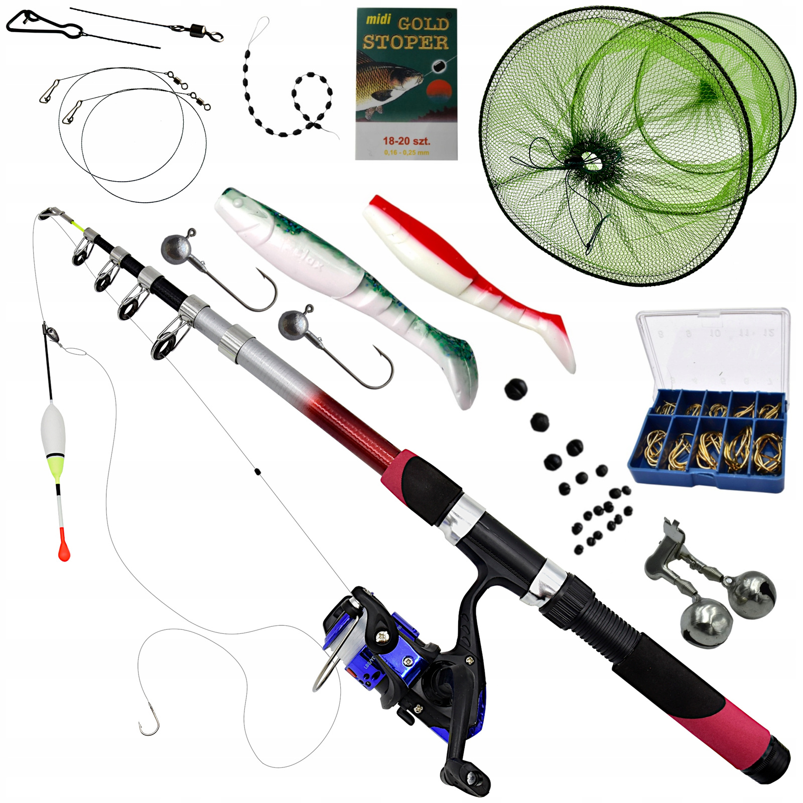

Węzły wędkarskie, które musisz znać
Wiązanie haczyka czy krętlika to podstawa. Dobry węzeł zapewnia, że nie stracimy życiowej ryby w najważniejszym momencie holu. Najpopularniejszym węzłem wśród wędkarzy jest tzw. węzeł palomar.
Jak czytać wodę?
Umiejętność "czytania wody" pozwala wytypować miejsca, w których najprawdopodobniej przebywają ryby. Zwracaj uwagę na: powalone drzewa, uskoki dna, grążele czy miejsca, w których prąd wody ulega spowolnieniu.
Kalendarz brań - czy warto w niego wierzyć?
Wielu wędkarzy sugeruje się fazami księżyca i ciśnieniem atmosferycznym. Choć ryby często reagują na zmiany pogody, nic nie zastąpi czasu spędzonego nad wodą i obserwacji natury.